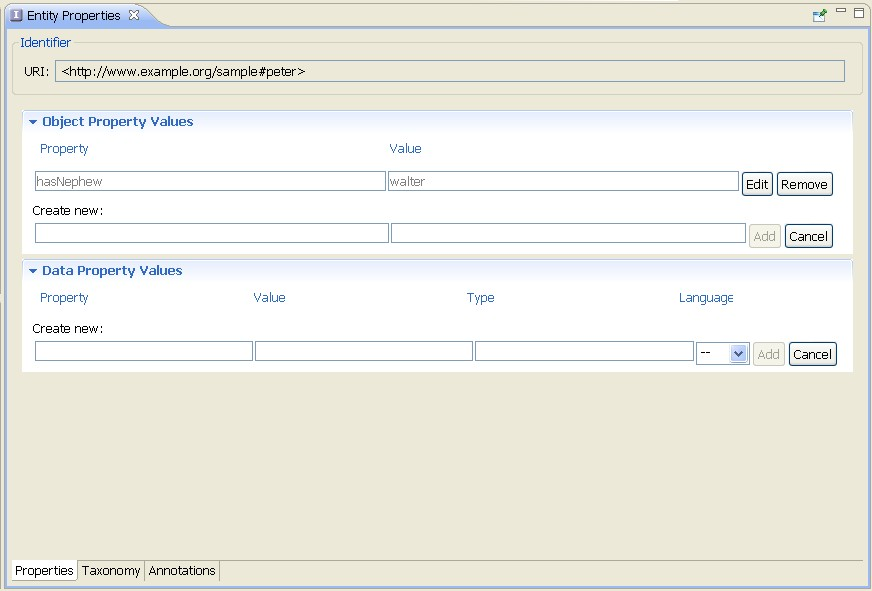
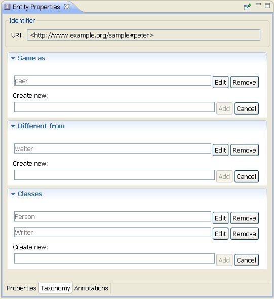
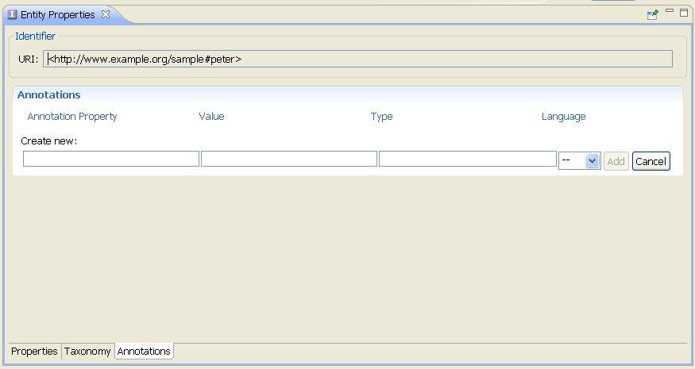

OWL Individuals
The Entity Properties View for individuals contains the property values of the instance. The various configuration
options are located on the following tabs:
- Properties
- Taxonomy
- Annotations
Properties
On the Properties tab you can edit the the object and datatype property values
of the selected instance. Object properties link an individual to an individual.
Datatype properties link an individual to an XML Schema datatype
value or an RDF literal.

Taxonomy
On the Taxonomy tab you can edit the classes of which the individual is member of. In addition, you can
specify whether two individuals are identical or different. Note that two different names of individuals can actually refer to the
same individual. For the ontology language OWL does not make the so-called Unique Name Assumption (UNA), which means that that
two different names of individuals in the ontology necessarily refer to different entities in the world. Instead, OWL provides
explicit constructs to express that two names denote distinct entities.
- owl:sameAs is the OWL property that states that two given named individuals have the same identity.
- owl:differentFrom is the OWL property that states that two given named individuals have different identities.
For Data Properties you can also define a Type, which is either an XML Schema datatype or RDFS Literal, and a language code.

Annotations
Usually, annotations are used to add information to resources of the ontology. They contain useful information such
as who is the creator or what are the readable labels and comments for single elements of the ontology.
For information on how to create an annotation, see Create an Annotation.
